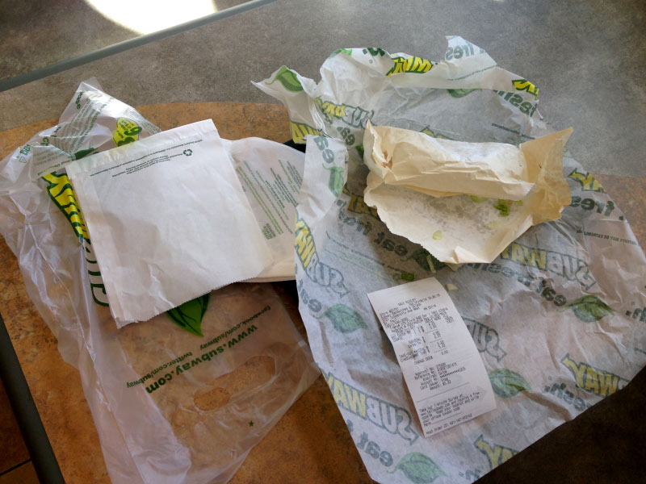

I’m a product designer and musician in Minneapolis, MN. I work at GitHub. I also work on Hum. Before that, I designed and help build Adobe Edge Reflow. I lead a band called The Usual Things.
I occasionally eat at Subway, which I actually take a lot of shit for. C’mon. Get a grip, snobs. I order a six-inch chicken breast on flatbread with american cheese, lettuce, and just a tiny shot of barbecue sauce if the restaurant has it.
I’ve done a few cross-country tours. It can be hard to avoid fast food on the interstate. I can go to Subway, build the sandwich I like, get it at a reasonable price, not feel like death, and get back to what I was doing—traveling, performing, fighting crime.
I’m not the only one who eats there, clearly. Subway has 42,059 restaurants in 107 countries. Subway has 499 restaurants in Minnesota alone, 24,385 nation-wide. They’re nearly ubiquitous, showing up in gas stations and malls, outpacing McDonald’s and every other fast food chain in number of stores. That becomes a problem, though. Here’s why:
Waste.
You’ve made it through the line at Subway. The sandwich maker has just thrown out their nth pair of plastic gloves that day. You watch as your sandwich is first placed in a paper sleeve. Then it’s wrapped in another branded sheet of paper. It’s then placed in a plastic bag with a stack of paper napkins.
I’m not asked if I’m dining in or taking out. Regardless of if I choose to eat at the restaurant I’m given exorbitant amounts of redundant packaging for a sandwich. The only option for disposing of this is in the landfill.
Steps to help fix this:
I’ve often attempted at the end of an order to say something to the effect of “You can just hand me the sandwich, it’s ok. I don’t need the bag or anything.” This is the most confusing thing you can tell a Subway employee and you should avoid doing so. Subway employees are trained to expect just about anything in regards to building the actual sandwich, but as soon as the sandwich is finished, you’re pushing your luck.
Sandwiches are designed to be held by human fingers. Are Subway patrons really so averse to eating food that hasn’t first been doubley wrapped and placed in a plastic bag? Your restaurants have tables, some even have the trays. Yet, for some reason employees still wrap the thing to go.
Allow your customers to use the tables and trays. Train your employees to ask if you’re dining in or carrying out. If you’re dining in, serve the sandwich on a washable, reusable tray. Let customers grab their own appropriately-sized stack of napkins. Allow the sandwich to cool without wrapping it in layers of paper. Not everyone who eats Subway is on the go.
Yeah, I know. But I’d rather watch an employee wash their hands before starting an order than throw a pair of gloves away.
Consider the photo. That’s a single 6-inch sandwich. Multiply the weight of a single sandwich’s waste by the number of sandwiches sold in each of their 42,059 restaurants a day. The amount of waste is staggering.
Let’s just say Subway sells a single sandwich at each one of their restaurants. That’s it. Just the one sandwich. Let’s say that single sandwich produces a conservative guess of 1oz of waste. For their 42,059 restaurants, that’s 2,628 lbs. of trash a day. For a single sandwich sold at each of their restaurants.
The amount of waste is staggering, sure, but, consider the bottom-line benefits of reducing this cruft. Let’s say Subway saves a single cent on that single sandwich they’re selling at each of their stores in our example. That’s $420.59 in material costs saved. Say they sell 100 sandwiches at each restaurant. They’ve saved $42,059, in a single day by removing a few napkins from each order.
Operational inefficiencies at that scale can have massive consequences, to our environment, to a company’s bottom line, and to the customer experience. By empathizing with the customer (or users, if you’re building software), you may be able to optimize for each.
Subway’s in an interesting position. Tiny changes can have massive implications for the better.
Wanna get an email each time I post something?